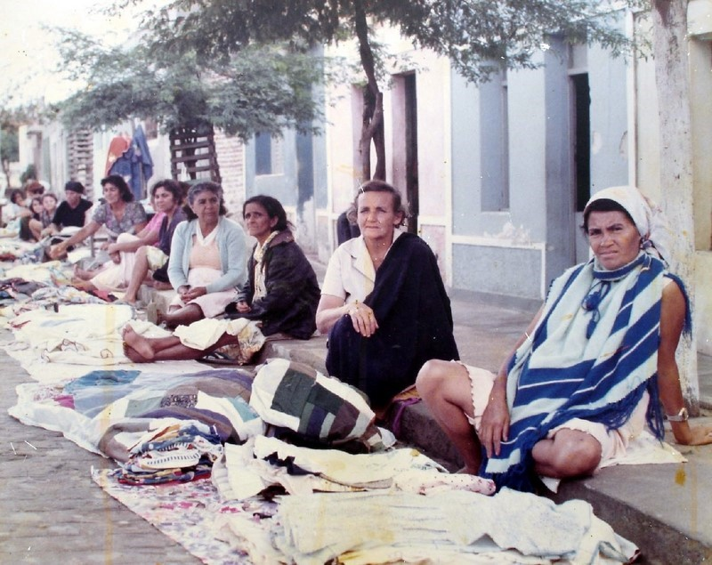
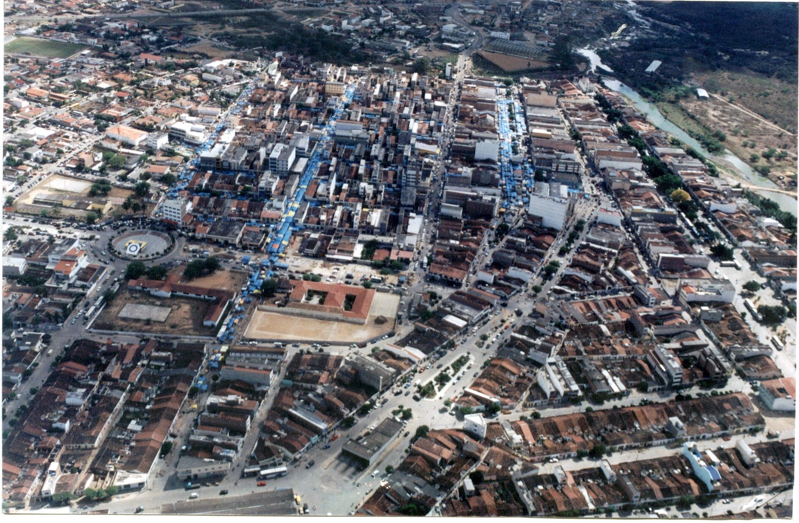
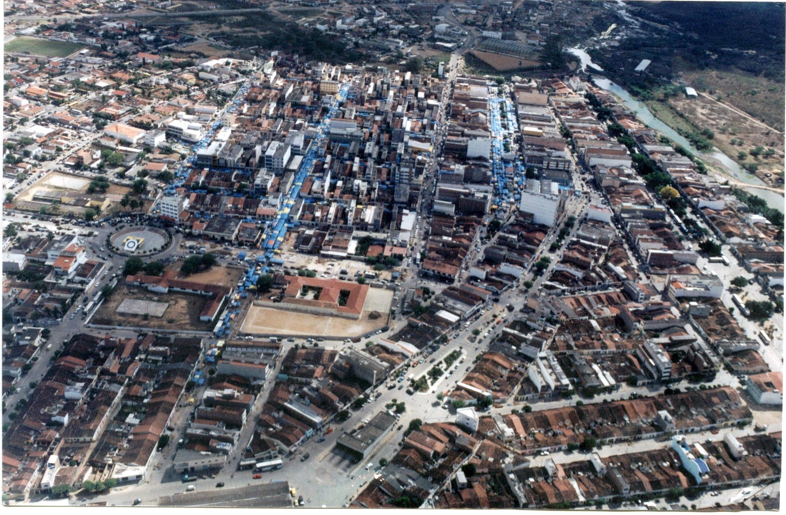

O município de Santa Cruz do Capibaribe foi criado pelo decreto-lei 1818 de 29 de dezembro de 1953, formado pelos 2° e 3° distritos de Taquaritinga do Norte, Santa Cruz do Capibaribe e Pará. Com a criação do novo município ficou composta de três (3) distritos, sede, para 2° e Poço Fundo 3°. O município tem uma área de 205 km². Aspectos físicos, Orografia propriamente dita é plano em quase todo distrito da sede e o restante é bastante acidentado. Possuindo em todo o território diversas pequenas cordilheiras de serras, dentre elas: Exu na parte Oeste e ainda Santiago e Caxemira na parte Norte; Umburanas na parte Oeste e ainda dentro do território do município as serras, de Pindurão, Viração, Pará, Costela, Pico e Jitirana e ainda diversas outras de proporções menores, saliências arredondadas que se dar nome de serrotes. A parte plana é toda cheia de lagos periódicos, que se dar o nome de lagoas: dentre estas se encontram: Matumbo, Faca, e Manhosa, nas cercanias da cidade e ainda Lagoas do Barbosa, Marias Pretas, Ovo, Pereiros, Aroeira, Gamelinha, Chagas, e muitas outras de porte menor. O Terreno cultivável se compõe de três categorias: Arenoso, Argiloso e Cilício-argiloso. Curso d’água importante: Rio Capibaribe, corta o município numa extensão de 20 km de Oeste para Leste, dividindo-o do município de Madre Deus e ainda os riachos Arapuá, Tapera, dois afluentes importantes do Capibaribe e ainda uma infinidade de outros menores, todos de natureza periódica, só tem água durante a estação de inverno, findo este, todos se atravessam a pés enxuto. Vegetação: vegetação é de natureza precária, ultimamente o povo arrasou a madeira, vendendo a madeira de lei para fora para construções e outra parte fazendo carvão vegetal, sendo raro o proprietário que hoje ainda possui madeira na propriedade.
A vegetação é rasteira, muito cactos, Facheiro, Mandacaru, xiquexique, Palmatória, Macambira, Limites: O município limita-se a Leste, com Taquaritinga do Norte, ao Norte com Taquaritinga do Norte e o Estado da Paraíba, com o município de Barra de São Miguel; ao Sul com o município de Madre Deus, separado pelo Rio Capibaribe e ao Oeste com o município de Madre Deus, Jataúba e o Estado da Paraíba com o município de São João do Cariri. Aspecto Cultural: precário porem em plena ascendência. Existe na sede do município 2 ginásios filiados a CNEC. Com uma frequência aproximada de 400 alunos distribuídos entre os cursos de Jardim da Infância ao Curso Pedagógico, e tem dois Grupos escolares, Luís Alves da Silva, com nove professoras, com um efetivo de matricula de 278 e frequência de 234 alunos, distribuídos entre a 1ª e 4ª série. O Grupo Escolar José Francelino Aragão, por enquanto com quatro professoras. Com uma matricula de 173 alunos e uma frequência de 132 alunos. Ainda um Grupo Escolar Rural, com duas professoras também com uma regular frequência. Ainda uma infinidade de pequenos Grupos e Escolas Municipais, distribuídas em todo o território do município, existindo muita precariedade de professoras, pois muitos deles se encontram fechados por falta de professoras.
População: a população do município é estimada em aproximadamente entre 15 e 15 mil habitantes; na sede do 2° distrito na Vila do Pará vive atualmente 800 habitantes e na sede do 3° distrito Poço Fundo, reside atualmente 600 habitantes. O Prefeito atual é Raimundo Francelino Aragão e o vice é José Gomes Ribeiro, reeleito para o segundo período. O primeiro prefeito constitucional foi Raimundo Aragão, tomou posse em no primeiro período em 29 de dezembro de 1955, ainda ali existia vice. Para o segundo período foi eleito Pedro da Silva Neves, que tomou posse em 29 de dezembro de 1959, sendo José Gomes Ribeiro eleito e empossado Vice. Para o terceiro período, foi eleito pela segunda vez Raimundo Aragão, que tomou posse em 29 de dezembro de 1963, juntamente com o vice reeleito, José Gomes Ribeiro, cujo mandato expiram em 31 de dezembro de 1969. A sede do Governo é a cidade de Santa Cruz do Capibaribe, instalado em um Palacete estilo funcional, que acumula todo o serviço da Municipalidade, inclusive, Câmara de Vereadores, em numero de nove (09) e ainda FORUM e Coletoria Federal. Os demais prédio do serviço Publico tem cada qual sua sede, Coletoria Estadual, Delegacia de Policia, Cooperativa Agro Pecuária, Mercado de Cereais; prédio particular; Mercado para Carne, próprio do município. Abastecimento de água, precário, o serviço de abastecimento de água é feito das fontes como sejam pequenos barreiros ou reservatórios não apropriados, a água pura que se tem atualmente é de cisternas. Cada família de meios, possui sua cisterna para abastecimento, e o povo em geral, se abastece de qualquer água, não em toda parte gente sem escrúpulo que para arranjar dinheiro não se importa de vender qualquer água mesmo poluída, mesmo que prejudique a saúde de outros. Iluminação Pública: Luz de Paulo Afonso, cara porem abundante e boa. A cidade está muita bem servida e agora está em vias de eletrificação, as sedes dos dois distritos, Pará e Poço Fundo. A posteação já está distribuída já em vias de execução. A linha consome 276 postes, a Vila do Pará 43 e a Vila de Poço Fundo 24 postes. Calçamento: A principal artéria é calçada, a rua da feira; em vias de execução a segunda artéria principal. Praças existentes: diversas porem todas ainda em projeto. Fórum: tem movimento regular. A comarca teve como primeiro Juiz de Direito, Dr. Carlos Alberto Pedrosa Marinho, hoje titular da 24ª Vara da Capital. O segundo Juiz foi Dr. Naercio Cyreno Gonçalves, o qual exerceu o cargo durante nove anos, foi substituída por Dr. Antonio Macedo Malta; é o atual Dr. Ivonaldo Pereira de Miranda. Primeiro Promotor Público foi o Dr. Ananias Tavares de Sousa Campos, seguindo-se Drª Telga Araújo, Paulo Pedrosa, Odenice Santos Medrado, José Agnaldo Santa Cruz Valadares, atualmente é Dr. Petrônio Barbosa. Cartórios: só existe um cartório único abrangendo Crime, Imóveis e hipotecas e eleitoral e Cartório de Registro Civil. Em tempo, entre o exercício do Dr. Macedo Malta e o atual, houve um certo período que exerceu aqui a magistratura Dr. Jader Jordão Vasconcelos sendo o antecessor do titular atual. Eleitoral: eleitoralmente Santa Cruz é a 99ª Zona Eleitoral e conta atualmente com 4.836 eleitores aptos para votar. Cartórios nos distritos existe somente o Registro Civil, com permissão de passar pequenas escrituras e reconhecimento de firmas. Educação secundaria, somente o Curso Pedagógico. Bibliotecas: O Ginásio Santa Cruz e o Grupo Luís Alves da Silva possuem pequenas bibliotecas. Imprensa falada ou escrita: não existe.
Transportes: o meio de transporte é muito desenvolvido entre o município de Caruaru e Recife. Atualmente existem três empresas de ônibus fazendo o transporte entre a cidade e Recife. A Autoviaria Caruaruense; Aparecida e a 1002. A primeira faz o transporte entre esta cidade Caruaru e Recife e as duas outras entre esta cidade Jataúba e Recife, via Surubim – Limoeiro. Além de grande número de veículos de todas espécies, muitos carros particulares. Produção Agropecuária Industrial: a produção agropecuária é bem desenvolvida; um rebanho regular de bovinos e alguns caprinos e ovinos. A Industria é ainda pouco desenvolvida, tem uma moagem de café e milho (ORIZABA); uma pequena indústria de sabão, e regular indústria de roupas feitas; especialmente de trapos importados de São Paulo.
Recreação e Clube Sociais: somente football, outros esportes ainda pouco desenvolvidos. Cinema: possui um bom cinema, CINE BANDEIRANTE; iniciativa particular.
Religião: a maioria Católica-Romana; entretanto existe liberdade de culto. Existe na cidade um templo Católico e outro em vias de construção; existe também um templo Protestante; como esta ceita tem diversos adeptos, cada seita faz seus cultos um tanto público em suas residências; existe também espíritas e ritos Afro-asiáticos, cultivados por seus adeptos. Folclore: comum na região; a dança particular na roça é o que mais predomina; as novenas do mato como se chama as devoções de festejar seu santo predileto com novenas estas quase que praticamente extintas, mas ainda existe. A festa mais importante ainda nos meios rurais e a festa de casamento, com comes e bebes e a dança; não havendo dança não houve festa pode haver a alegria que houver, a festa foi fraca.
Santa Cruz do Capibaribe: Cidade sede do município do mesmo nome está situada num canto de esquadro formado pelo Rio Capibaribe, que corre paralelo a Cidade de Oeste para Leste; e de seu afluente riacho Tapera, que corre paralelo a Cidade de Norte a Sul, fazendo seu desaguadouro naquele por traz da Igreja Matriz. Está localizada no vértice sudeste do polígono. Suas coordenadas geográficas: 36°10’54” de Longitude Norte, e 07°57’16” de Latitude Sul; a 472 metros acima do nível do mar. Quanto sua fundação, não se pode afirmar uma coisa com plena segurança, porque não se tem arquivo; o que afirmamos é pesquisas. Conforme nos narram estas mesmas pesquisas, Santa Cruz teve suas origens e fundação no fim do século XVII, para começo do século XVIII, quando naquela época chegou em Recife um certo fidalgo português de nome Antônio Burgos. (Complemento de Jamile Hiast: Há contradições e enigmas por traz da certeza de que Antônio Burgos seria o ‘fundador’ da cidade, nos documentos constata-se controvérsias entre datas e nomes da família Burgos/Borges?), em procura de terras de ares apropriado para trato de saúde, foi aconselhado pelos médicos de então a margear o Capibaribe até onde pudesse encontrar terras de ares conveniente a sua saúde abalada. Munindo-se convenientemente com recursos necessários, partiu do Recife margeando o Capibaribe, aportando aqui sua primeira preocupação fora a de erigir um MADEIRO como faziam os portugueses ao pisar em solo por eles descobertos e daí o nome que se conserva até hoje.

– Conforme ainda nos narram estas mesmas pesquisas a primeira Igrejinha construída no local onde hoje se ergue a atual Matriz, teria sido construída em 1710, conforme foi encontrado um tijolo cozido com a seguinte inscrição: “Esta foi feita em 1710”. Este tijolo foi encontrado ao demolir-se a Igrejinha antiga em1870, para dar lugar a construção da atual erguida no mesmo local. Santa Cruz quando foi desmembrada era o 3° distrito de Taquaritinga, foi elevada à categoria de Vila em 18 de abril de 1892 e instalada em 19 de maio de 1892. A 13 de junho de 1892, foi criada a Agencia postal e em 1924, foi criada Agencia Postal Telefônica, que se conserva até hoje, servida por telefone para atender o serviço telegráfico. Seu primeiro telegrafista foi José Cursino de Castro. Em 1953, quando foi criado o Município seu primeiro prefeito nomeado foi o 1° Tenente Teófanes Ferraz Torres Filho, depois este se candidatou para concorrer as eleições para prefeito constitucional, foi nomeado para substitui-lo João Deodato de Barros. Foi eleito para a primeira legislatura Raimundo Francelino Aragão, naquela época o município ainda não tinha renda que tivesse vice-prefeito. Para a segunda legislatura foi eleito Pedro da Silva Neves, aí a renda já dava direito o vice-prefeito, foi eleito com Pedro Neves, José Gomes Ribeiro para vice. Terminado o mandato de Pedro Neves, Raimundo Aragão entrou no páreo pra outra legislatura, venceu as eleições e novamente Jose Gomes Ribeiro, com ele para vice. Quando foi criado o município possuía 700 casas, logo após a eleição de Raimundo Aragão este adquiriu uma propriedade de 162 hectares nas cercanias da cidade facilitando ao povo para construção e que a cidade tomou tamanho surto de construção que hoje possui mais de 3 mil unidades residenciais. Saúde: precária somente um médico para atender a população do município e das margens que afluem todos para aqui, a deficiência de alimentação dos rurícolas, a falta de higiene e fatores outros de origens diversas, faz com que a saúde do povo seja muito precária. A incidência de Câncer é muito grande. Prédios Públicos: Maternidade, Prefeitura, Ginásio, Três Grupos Escolares, Coletoria Estadual, Mercado de Carne, em vias de construção prédio para agencia do Banco do Brasil. Eclesiasticamente: pertence a Diocese de Caruaru, foi elevada à categoria de Matrizem 1918, no governo de D. Sebastião Leme da Silveira Cintra, digo no governo de D. Luiz Raimundo da Silva Brito e provida em 1922 no governo de D. Sebastião da Silveira Cintra, seu primeiro vigário titular foi Pe. José Apolinario Martins. O atual é Conego José Pereira da Silva, “Padre Zuzinha”. Hino e Bandeira: por hora tem somente projetos, em via de consecução. Cultura: A principal cultura do Município é algodão; milho; mamona e feijão de corda, conhecido como feijão macaçá. O feijão mulatinho feijão de arranca como é geralmente conhecido, também dá, depende do ano, sempre é mais preferível o feijão preto, é geralmente um feijão mais resistente, dependendo quase sempre da quantidade pluviosa, isto é, da chuva caída. O maior inconveniente para a lavoura no nosso município é o baixíssimo índice pluviométrica região, creio que talvez seja este município o de mais baixo índice pluviométrico da Zona da Mata e Cariri, daí o cuidado dos responsáveis pelos destinos do município entrarem em entendimentos om as fontes competentes e estudarem as culturas que deveriam ser introduzidas nesta região, afim de evitar esse eterno suplicio dos pobres agricultores deste martírio de constante perdas de suas colheitas. A agricultura de milho por exemplo, é uma cultura que não depende de tanta chuva, depende, todavia, de chuva no tempo certo da boneca, como o feijão que também depende de chuva no tempo da flora, justamente é o que faz o lavrador perder suas colheitas sem toda essa região é esta falta constante de chuva no tempo das colheitas. O povo na sua experiencia, mesmo sem a assistência dos poderes, procura constantemente melhorar esta situação, procurando introduzir em seus cultivos culturas que se adaptem a pouca pluviosidade da região.
 

Comércio: O comércio da região é bastante da região é bastante desenvolvido, o povo desanima da lavoura e ingressa no comércio. – O maior fator comercial de Santa Cruz é sua feira. – No dia de Segunda-Feira, mantem um intercâmbio comercial com toda a zona da Paraíba de Patos para baixo. Os paraibanos trazendo para aqui os seus produtos e se abastecendo aqui de suas necessidades. A feira torna-se um colosso, se diga que talvez seja uma das maiores da região Nordeste em lugar de proporção a Santa Cruz, se não se pode comparar com Vitoria de Santo Antão ou Caruaru, no entretanto faz um arremedo com a feira destas duas cidades. Muitos bons produtos para abastecimento, carne de primeira qualidade e queijo de coalho igual ao do Seridó. O queijo Sertão, o chamado queijo de manteiga, hoje despareceu mesmo porque não compensa mais faze-lo como ele merece ser feito. Cozinhado a coalhada no leite e depois cozinhado pela segunda vez na manteiga, pelo preço corrente do leite e da manteiga se verá porque desapareceu o bom queijo sertão e se ainda aparece é pelos olhos da cara e nunca mais é aquilo que era antes.
Ao encontrar documento original, no Arquivo Histórico Ultramarino em Lisboa, na coleção de papeis de Pernambuco, março de 1937, o historiador José Antônio Gonsalves de Mello os publicou na monografia “Três Roteiros de Penetração do Território Pernambucano” (ed. UFPE, Recife 1966). Os dois primeiros roteiros estabelecidos oficialmente, cortando, de leste a oeste todo Agreste pernambucano eram o caminho do Capibaribe ao norte; e o caminho do Ipojuca ao centro. Os documentos que deram origem a esta monografia, foram preparados em 1738, por iniciativa do então governador da Capitania de Pernambuco, naquele ano, Henrique Luiz Pereira, pois o preocupava a imprecisão das distâncias entre as povoações interioranas, que eram informações de terceiros, nem sempre exatas. Os chamados “caminhos das boiadas” acompanhavam os vales formados pelos leitos dos grandes rios, ou sejam, Capibaribe – Pajeú - São Francisco e/ou Ipojuca - Moxotó -São Francisco. Por ordem governamental esses caminhos naturais foram percorridos e cuidadosamente medidos e registrados, a começar em Recife penetrou-se o interior da Capitania até os confins do Carinhanha, na fronteira com Minas Gerais, indicou-se o itinerário das localidades encontradas e já batizadas por seus moradores (alguns dos primitivos nomes são conservados na atualidade) e estabeleceu-se em base prática suas distâncias em léguas. Em transcrição direta daquela monografia vamos destacar o trecho do caminho do Capibaribe que aqui nos interessa, ou seja, até Poço Fundo. “Assento das léguas que fazem daqui (Recife) ao rodelas pelo caminho do Capibaribe são as seguintes:
Daí em diante, o caminho do Capibaribe continua penetrando o Cariri da Paraíba, até atingir o rio Pajeú em São Pedro, hoje Itapetim e daí acompanhando o Pajeú até Cabrobó no rio São Francisco. Dentre os pontos identificados pelo caminho do Capibaribe, em pleno Agreste Setentrional, destacaremos os seguintes: Missão do Limoeiro, à margem do Capibaribe pela aldeia do Limoeiro e fundada em 1662 pelo Pe. João Duarte do Sacramento, e membro da Congregação de São Filipe Neri. Atualmente a cidade de Limoeiro; Espirito Santo, fazenda brejense fundada pelos padres da Congregação de São Felipe Neri. Atualmente continua com o mesmo nome; Tapera, não temos informações sobre a sua fundação, mas acompanhando o itinerário do caminho do Capibaribe, e as distâncias destas, as localidades próximas conhecidas ou sejam as fazendas Espirito Santo e Poço Fundo, não há duvida que a Tapera estava assentada, onde hoje está situada a cidade de Santa Cruz do Capibaribe. Concluiu-se que, a Tapera (atualmente Santa Cruz do Capibaribe), há 273 já fazia parte da rota do comercio do Recife com as mais distantes localidades do interior. Poço Fundo, fazenda fundada pelo coronel João Cavalcanti de Albuquerque, a qual, recebeu em carta sesmaria, assinada em 10 de outubro de 1727, atualmente é a vila de Poço Fundo.
Fonte: Barbalho, Nelson Cronologia Pernambucana, Vol. 7_ Tópicos, 1169 e 1174
FIAM/CEHM, Recife Calendário Oficial de Datas Históricas dos Municípios do Interior de Pernambuco. Organização de Carla Botelho. Apresentação de Eleny Pinto da Silveira. Recife, Fundação de Desenvolvimento Municipal do Interior de Pernambuco/Centro de Estudos de História Municipal, 1994. 160 p. (Coleção Documentos Históricos Municipais, 2) 1 – Calendário Datas Históricas – municípios Interior, PE. I – FIAM/CEHM, Recife. II – Titulo. C.D.U. 981.342:529(813-42)
(Desmembrado do município de Taquaritinga do Norte)
*Criação do município e comarca....................................29 de dezembro de
1953(1)
*Classificação da comarca em 1 entrância..............................21 de maio de 1954 (2)
*Extinção da comarca...........................................................05 de agosto de 1966 (3)
*Data cívica comemorada.................................................................29 de dezembro.
(1) Lei Estadual nº 1.818 de 29/12/1953 Art. 1º - “Ficam criados os municípios de... Santa Cruz do Capibaribe, abrangendo o distrito do mesmo nome e o de Pará, e terão como sedes as vilas do mesmo nome.” Art. 3º - “Os municípios ora criados serão sedes de comarcas...” Leis, Decretos e Atos do Governo do Estado do ano de 1953 – outubro/dezembro. Recife, Imprensa Oficial, 1953, p. 167-168.
(2) Lei Estadual nº 1.846 de 21/05/1954. Art. 1º - “Ficam classificados como de 1ª entrância as comarcas de...Santa Cruz do Capibaribe..., criadas pela lei nº1.818 de 29/12/1953.” Leis, Decretos e Atos do Governo do Estado – abril/junho. Recife, Imprensa Oficial, 1954, p. 47-48.
(3) Decreto-lei Estadual nº 61 de 05/08/1969. Art. 6º - “Ficam extintas as seguintes comarcas:...27 – Santa Cruz do Capibaribe, que passará a termo da comarca de Taquaritinga.” D. O. E. Ano XLVI – nº179. Recife, 06/08/1969, p. 6.502-6.503.
(Desmembrado da comarca de Limoeiro)
*Criação do distrito de Paz de Limoeiro................................................................1834
(1)
*Criação da comarca e vila............................................................26 de maio de 1877
(2)
*Extinção da vila e transferência da comarca para Vertentes.4 de fevereiro de 1879
(3)
*Transferência da sede da freguesia para Vertentes.............27 de fevereiro de 1879
(4)
*Instalação da comarca (em Vertentes) ......................................20 de junho de 1879
(5)
*Transferência da sede do termo e comarca para Taquaritinga. 05 de maio de 1886
(6)
*Elevação a cidade.......................................................................10 de maio de 1887
(7)
*Constituição do município (com base no art. 2º das disposições gerais da Lei nº 52 de 03/08/1892..........................................................................16 de novembro de 1892
(8)
*Data cívica comemorada em 20 de maio.
(1) Oficio da Câmara de Limoeiro ao Conselho do Governo da Provincia, datado de 22/10/1834. Comunicando os nomes dos distritos de paz criados em seu município. “... e o segundo ponto da povoação da Matriz de bom Jardim ... os seguintes distritos ..., Taquaritinga... “Serie CAMARA MUNICIPAIS – Códice nº 13 – ano 1834, p. 241.
(2) Lei Provincial noº 1.260 de 26/05/1877. Art. 1º - “Ficam criadas as seguintes comarcas:§1º - A de Taquaritinga, desmembrada da comarca de Limoeiro, ficando elevado à categoria de vila o povoado de Taquaritinga.” Leis Províncias do ano de 1877. Recife, Tipografia de M. F. de Farias e filhos, 1877, p. 05-06.
(3) Lei Provincial nº1.317 de 04/02/1879. Art. Único – “Fica elevada à categoria de vila povoação de Vertentes e para ela transferida a sede da comarca de Taquaritinga, criada pela Lei nº 1.260 de 26/05/1877. Ficando a mesma lei revogada na parte em que elevou à categoria de vila o povoado de Taquaritinga.” Coleção das Leis Provinciais para o ano de 1879, Recife, Tipografia de M. F. de Faria e filhos, 1879. P. 08-09.
(4) Lei Provincial nº 1.419 de 27/05/1879. Art. 1º - “Fica ereta a igreja de São José de Vertentes e para ela é transferida a sede da freguesia de Taquaritinga.” Coleção de das Leis Provinciais para o ano de 1879. Recife, Tipografia de M. F. de Faria e Filhos, 1879, p. 88.
(5) Oficio do Conselho de Intendência para o governador, datado de 21/07/1890, encaminhando cópia da ata da instalação a comarca de Taquaritinga em Vertentes, em 20/06/1879. Série INTENDÊNCIAS MUNICIPAIS – Códice nº 4 – ano 1890, p. 323 (oficio) 326-327 (cópia da Ata).
(6) Lei Provincial nº 1.864 de 05/05/1886. Art. Único – “Fica desde já transferida da vila de Vertentes para a de Taquaritinga a sede do termo e comarca deste nome” Leis Provinciais da Provincia de Pernambuco para o ano de 1886. Recife, Tipografia de M. F. de Faria e Filhos, 1886, p. 03-04.
(7) Lei Provincial nº 1.895 de 10/05/1887. Art. Único – “Fica elevada a cidade a vila de Taquaritinga com a mesma denominação.” Leis Provinciais para o ano de 1887. Recife, Tipografia de M. F. de Faria e filhos, 1887, p. 28.
(8) Oficio do prefeito de Taquaritinga ao governador do Estado, com data de 16/02/1892, declarando constituído o município nessa mesma data. Serie PREFEITURAS MUNICIPAIS – Códice nº 1, p. 223.
(Desmembrado do município de Taquaritinga do Norte)
*Criação da vila.......................................................................04 de fevereiro de 1879
(1)
*Criação da freguesia....................................................................27 de maio de 1879
(2)
*Instalação da Câmara................................................................07 de março de 1881
(3)
*Transferência da sede do termo de comarca de Taquaritinga da vila de Vertentes para a vila de Taquaritinga....................................................................04 de maio de 1886
(4)
*Transferência da sede do município de Taquaritinga para a vila de Vertentes................
......................................................................................................04 de junho de 1915
(5)
*Criação do municipio...........................................................11 de setembro de 1928
(6)
*Instalação do municipio...........................................................01 de janeiro de 1929
(6)
*Data cívica é comemorada em 11 de setembro.
(1) Lei Provincial nº 1.317 de 04/02/1879. Art. Único – “Fica elevada à categoria de vila a povoação de Vertentes e para ela transferida a sede da comarca de Taquaritinga, criada pela Lei nº 1.260 de 26/05/1877, ficando a mesma lei revogada na parte em que elevou à categoria de vila o povoado de Taquaritinga.” Coleção das Leis Provinciais para o ano de 1879, Tipografia de M. F. de Faria e filhos, 1879, p. 08-09.
(2) Lei Provincial nº 1.419 de 27/05/1879. Art. 1º - “Fica ereta em matriz a igreja de São José das Vertentes e para ela é transferida a sede da freguesia de Taquaritinga.” Coleção de Leis Provinciais par o ano de 1879, Recife, Tipografia de M. F. de Faria e Filhos, 1879, p. 88.
(3) - Copia da ata de instalação da Câmara de Vertentes, em 07/13/1881, Série INTENDENCIAS MUNICIPAIS – Códice nº 4 – ano 1890, p. 328-331.
(4) Lei Provincial 1.864 de 05/05/1886. Art. Único – “Fica desde já transferida da vila de Vertentes para a de Taquaritinga a sede deste nome.” Leis Provinciais da Provincia de Pernambuco para o ano de 1886. Recife, Tipografia de M. F. faria e Filhos, 1886, p. 03-04.
(5) - Lei Estadual nº 1.267 de 04/06/1915. Art. 1º - “Fica transferida para a vila de Vertentes, do município de Taquaritinga, a sede do mesmo município.” Legislação do estado de Pernambuco. Recife, Empresa d’O Tempo, 1915, 1915, p. 29.
(6) Lei Estadual nº 1931 de 11/09/1928, Art. 6º - “São criados no 2º distrito eleitoral do Estado ... os seguintes novos municípios: ... X – O município de Vertentes, constituído pelos territórios dos distritos de Vertentes, Santa Maria, Torre e Olho d’Água da Onça, desmembrados do município de Taquaritinga.” Leis do Estado de Pernambuco e Decretos do Congresso Legislativo do ano de 1928. Recife, Imprensa Oficial, 1929, p. 45.
(7) Lei Estadual nº 1931 de 11/09/1928. Art. 15 § único – “... em primeiro de janeiro de 1929 se considerarão definitivamente deles separados, iniciando-se então as suas próprias administrações municipais”. Leis do estado de Pernambuco e Decretos do Congresso Legislativo. Recife, Imprensa Oficial, 1929, p. 49.
(Desmembrado da comarca de Olinda)
*Criação da vila...................................................................................19 de agosto de 1811 (1)
*Criação da comarca..................................................................................20 de maio de 1833 (2)
Elevação a cidade.......................................................................................20 de maio de 1881 (3)
Constituição do município (com base no art. 2º das disposições gerais da Lei nº 52 de 03/08/1822.................................................................................................06 de abril de 1893 (4)
(1) Alvará Régio de 19 de agosto de 1811 – cria a vila e respectivo termo de Limoeiro. Coleção das Leis Brasileiras desde a Chegada da Corte até a Época da Independência. Ouro Preto, na Tipografia de Silva, 1837, p. 76-77.
(2) Resolução do Conselho do Governo de Pernambuco. Ata da sessão ordinária do dia 20/05/1833, que aprova o projeto de divisão de termos e comarcas. Art. 4º - “A comarca de Limoeiro abrangerá somente o termo da vil de Limoeiro, que compreenderá as freguesias do Limoeiro e Bom Jardim, e a parte da freguesia de Taquaritinga, compreendida nesta Provincia de Pernambuco, cujas águas no Capibaribe abaixo do riacho Tabocas.” ATAS DO CONSELHO DO GOVERNO – Volume III – 1832 – 34, f. 61 v.
(3) Lei Provincial nº 1.560 de 30/05/1881. Art. 1º - “Ficam elevadas a cidade com as mesmas denominações as vilas de Bezerros e de Limoeiro.” Leis Provinciais do ano de 1881. S. F. R. p. 31-32.
(4) Cópia da ata da sessão de instalação do município com data de 06/04/1893. Série PREFEITURAS MUNICIPAIS – Códice nº4, p.325.
Notas:
1 - Em oficio de 22/10/1834. A Câmara do Limoeiro comunica ao Conselho do governo que a vila fora dividida em distritos assim denominados: “Vila9Limoeiro), Bengalas, Pedra Tapada, Figueirais, Passassunga, Palmas, Patos, e, no segundo ponto (povoação de Bom Jardim) Taquaritinga, Malhadinha, Ribeiro Grande, Bom Jardim e Queimadas... “Serie CAMARAS MUNICIPAIS – Códice nº 13, p. 241.
2 - Em 1893, em virtude da Lei Orgânica dos municípios nº 52 de 03/08/1892, foram criados 3 distritos: 1º Cidade; 2º Pedra Tapada; 3º Malhadinha (hoje município de Passira). Relação anexa ao oficio de 30/05/1893, do prefeito para o governador. Série PREFEITURAS MUNICIPAIS – Códice nº4. p. 331-332.